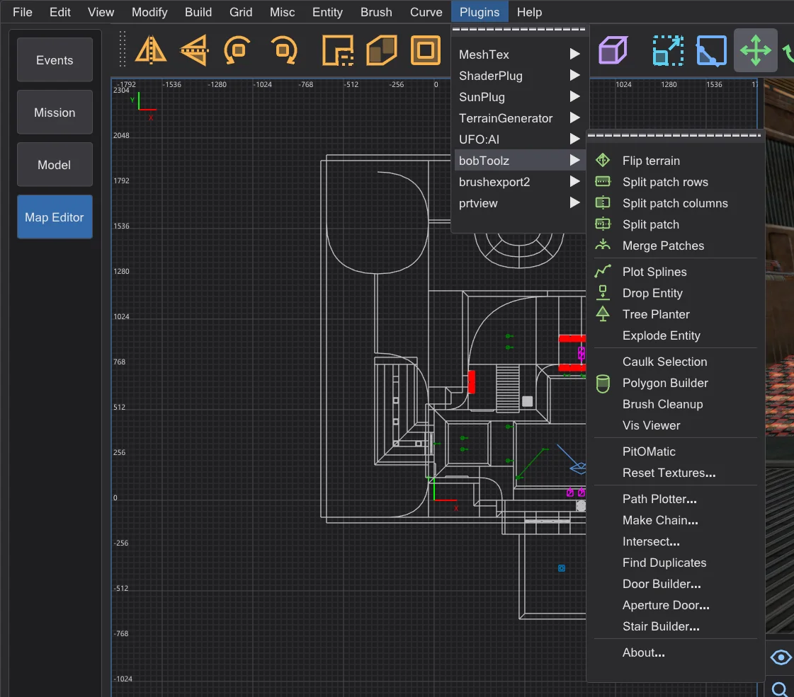
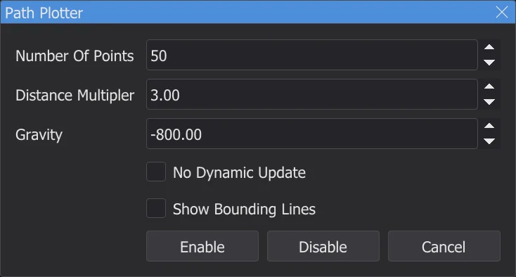
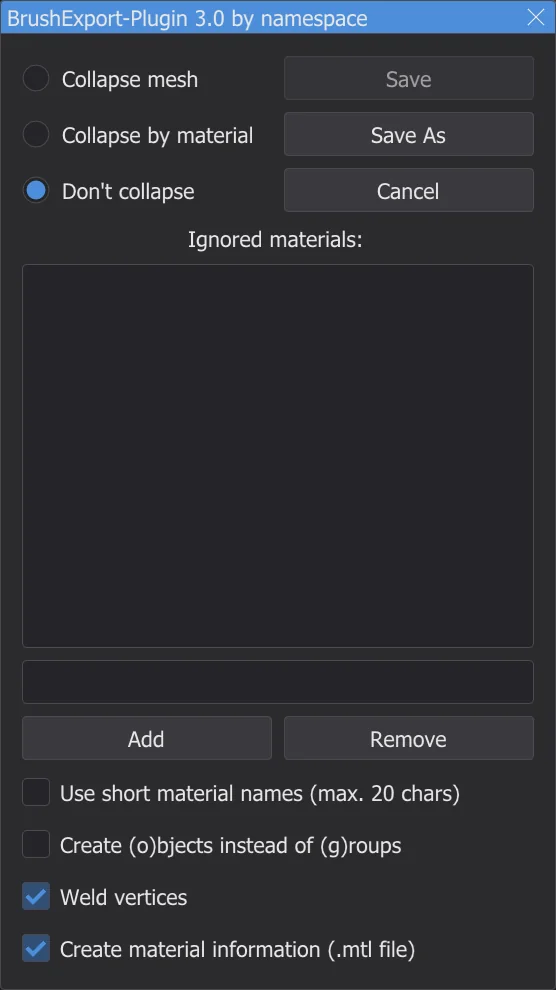
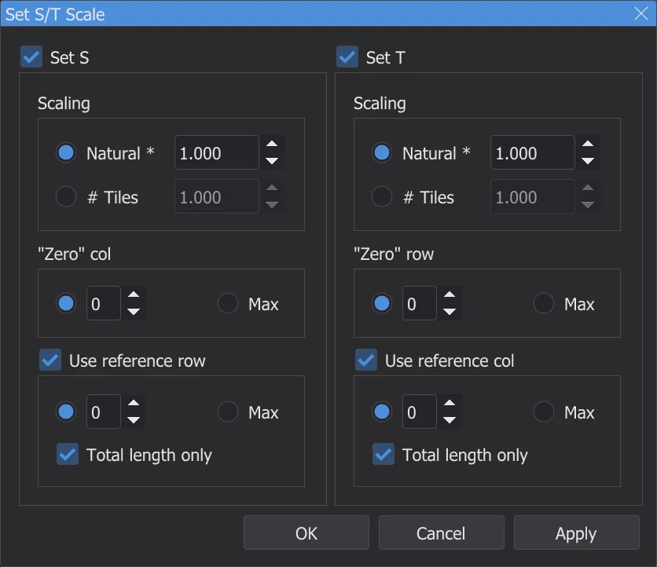

Map editor: plugins
The Plugins menu has every plugin of NetRadiant-Custom - bobToolz, brushexport2, MeshTex, ShaderPlug, SunPlug, UFO:AI and prtview - with all their entries and dialogs, ported from the source code.
The ⟦Plugins⟧ menu#

The entries keep the English names of NetRadiant-Custom, as the plugins have them there; the dialogs are in the program language - with Terms like NetRadiant (English) in NetRadiant-Custom's English. Every plugin has an About entry. Messages go to the console, errors in red. Each change a plugin makes is one undo step.
bobToolz#
| Entry | What it does |
|---|---|
| Flip terrain | Two selected terrain brushes (triangular prisms with a common edge): turns their common diagonal the other way. |
| Split patch rows / columns, Split patch | Cuts the selected patch into strips along its rows, its columns, or both. |
| Merge Patches | Joins two or more selected patches that share an edge into one. |
| Plot Splines | Draws the paths of info_train_spline_main chains with their info_train_spline_control points (see Make Chain). |
| Tree Planter, Drop Entity | Select the ground brushes and switch Tree Planter on: each left click in the XY view puts an entity from data\karte\bt\tp_ent.txt onto them, with a random model, angle and scale (as shipped, the file names tree models from Quake - put your own models there). Drop Entity drops the selected entities onto the same brushes. |
| Explode Entity | Splits the selected brush entity: each of its brushes becomes an entity of its own with the same keys (not worldspawn). |
| Caulk Selection | Gives every face of the selected brushes and patches the caulk texture. |
| Polygon Builder | Dialog Polygon Builder: turns one selected brush into a prism with the given number of sides - optionally hollow with a border, inverse, aligned to the top edge. |
| Brush Cleanup | Removes invalid and duplicate planes from all brushes of the map and reports how many. |
| Vis Viewer | Reads the compiled <map>.bsp next to the map - after a build, or the original after Open .bsp - and shows which BSP leafs are visible from the camera or the selection; the window BSP leafs lists them. |
| PitOMatic | Turns one selected brush into a death pit: triggers for the falling scream (*falling1.wav) and for removing powerups, a trigger_hurt at the bottom. |
| Reset Textures... | Dialog Texture Reset: replaces a texture name and resets scale, shift and rotation - on the selected or on all brushes. |
| Path Plotter... | Shows the flight path of a trigger_push - see below. |
| Make Chain... | Dialog Make Chain: builds a chain of info_train_spline_main entities with control points, named after the base name. |
| Intersect..., Find Duplicates | Select brushes that intersect each other (in the whole map or among the selected ones, optionally only duplicates), or every brush that exactly duplicates another. |
| Door Builder... | Turns one selected brush into two door halves (func_door) with door and trim textures from bt\door-tex*.txt, North-South or East-West. |
| Aperture Door... | Builds an aperture door (an iris of segments) from the selected brush - from parameters or from a winding. |
| Stair Builder... | Turns one selected brush into stairs: step height, direction, style (Original, Bob's Style, Corner Style), main and riser texture, optionally detail brushes. |
Path Plotter
- 1
Select a
trigger_pushthat has atarget. - 2
Plugins > bobToolz > Path Plotter... opens Path Plotter: number of points, distance multiplier and gravity of the path. Enable draws it in the 2D views and the camera.

The dialog Path Plotter with NetRadiant-Custom's values. - 3
Move the target - the path follows, unless No Dynamic Update is ticked. Disable removes it.

brushexport2#

Export selected as Wavefront Object writes the selected brushes as a .obj model, for example to continue them in a modelling program. The window chooses how faces are grouped (Collapse mesh, Collapse by material, Don't collapse), which materials to leave out (Ignored materials: - for example textures/common/caulk), and whether to shorten material names, write objects instead of groups, weld vertices and write a .mtl file. Save As asks for the file - the first time in the folder karte_export in the settings folder - and Save writes the same file again.
MeshTex#

MeshTex lays textures onto patches - curves, arches, terrain - where the Surface Inspector reaches its limits. Set S/T Scale sets the scale along S and T: natural (as on a brush face, *) or as a number of tiles, counted from a "zero" column or row, optionally measured along a reference row or column. Get Info shows the scale of the selected patch and can hand it to Set S/T Scale. General Function sets S and T as a linear function of the row and column distances. The Align entries fit the texture to the patch edges (minimum or maximum, stretched or shrunk, or automatically); Help... shows MeshTex's own explanation.
ShaderPlug, SunPlug, UFO:AI, prtview#
| Plugin | What it does |
|---|---|
| ShaderPlug | Create tag file writes the tag file of the texture browser: every shader gets the name of its .shader file as a tag. The texture browser loads it again at once (NetRadiant-Custom only after a restart). |
| SunPlug | In NetRadiant-Custom it contains ET-MapCoordinator: it calculates mapcoordsmins and mapcoordsmaxs for the command map of Enemy Territory from the size of the map and writes them into worldspawn with Set. Jedi Academy does not use these keys. |
| UFO:AI | Tools for the game UFO:AI: filters by its content flags (NoDraw, WeaponClip, ActorClip, StepOn, Level 1 to 8), Perform check and its worldspawn keys (Worldspawn, Worldspawn reset). They are there because NetRadiant-Custom shows them for every game. |
| prtview | Shows the portals of the last BSP stage - see Map editor: compiling the map. |